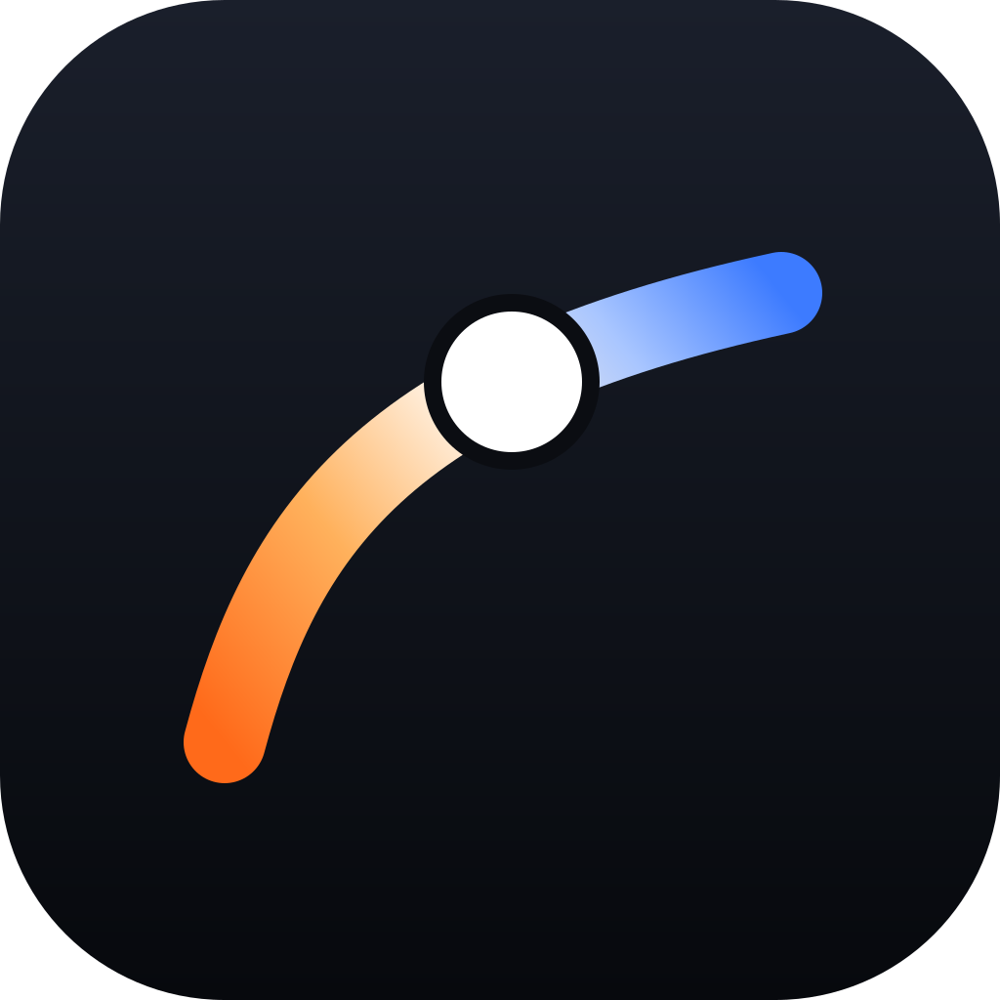
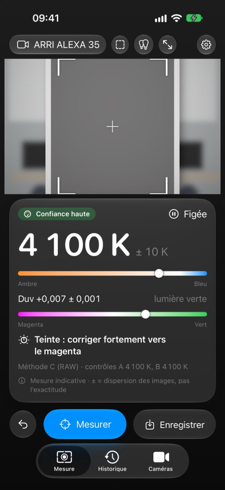
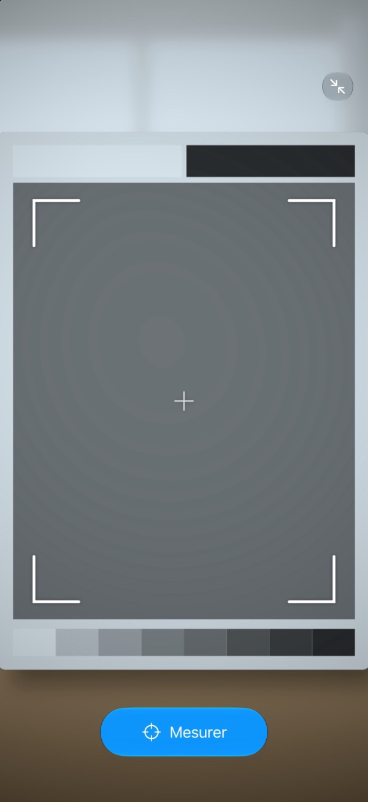
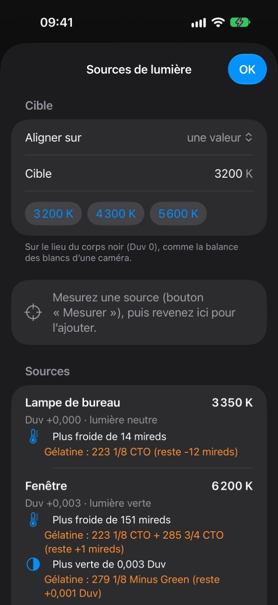
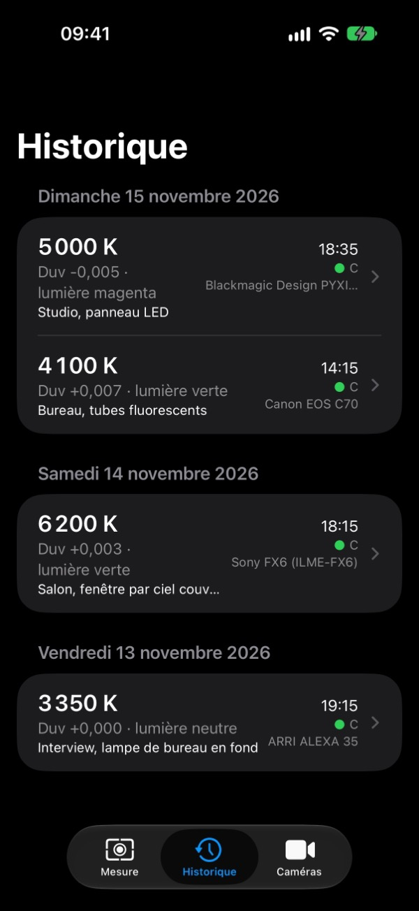
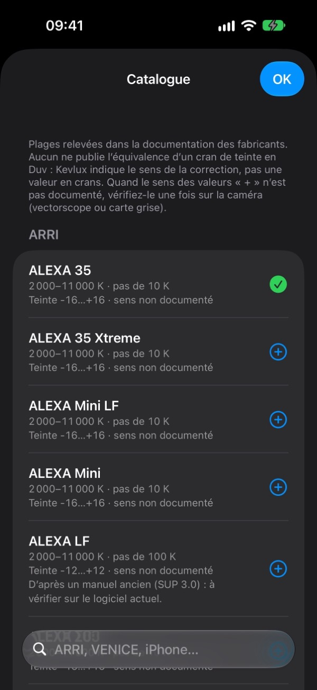

Trois méthodes, une réponse
Quand l’iPhone le permet, Kevlux prend une photo RAW et calcule la couleur à partir des données brutes du capteur. Deux autres méthodes servent de contrôle : si elles ne sont pas d’accord, Kevlux vous prévient.

KevluxBalance des blancs, sur iPhone et iPad
Visez une carte grise : Kevlux mesure la température et la teinte d’une lumière, puis vous dit quoi régler sur votre caméra.
Faites glisser le point blanc le long du lieu de Planck.
5 600K
Duv 0,000lumière neutre
Simulation : sur le lieu de Planck, le Duv est nul par définition.
Une seconde suffit : Kevlux combine une dizaine d’images et affiche la dispersion de la mesure.
Une carte grise, une carte blanche ou un mur blanc, à l’endroit du sujet et face à la lumière. Remplissez le réticule.
Touchez « Mesurer » et gardez l’iPhone immobile une seconde. Kevlux lit la température en kelvins et l’écart de teinte en Duv.
La température est arrondie au pas de votre caméra et la correction de teinte est indiquée dans son sens.
Un résultat lisible d’un coup d’œil, des outils pour toute l’équipe image, et Liquid Glass sur iOS 26.





Quand l’iPhone le permet, Kevlux prend une photo RAW et calcule la couleur à partir des données brutes du capteur. Deux autres méthodes servent de contrôle : si elles ne sont pas d’accord, Kevlux vous prévient.
Duv standard, sens lisible (lumière verte ou magenta) et correction à régler dans le sens propre au fabricant.
Cinéma, hybrides, caméscopes et caméras PTZ, avec plages et pas relevés chez les fabricants. Une valeur non publiée reste inconnue : Kevlux ne l’invente pas.
Comparez vos sources à une cible, en mireds et en Duv, et trouvez une ou deux gélatines LEE ou Rosco qui les y amènent.
Sans carte grise, Kevlux estime la lumière sur toute l’image. C’est moins sûr : la confiance ne dépasse jamais « moyenne ».
Aucun compte, aucune publicité, aucune donnée collectée. Les images sont analysées sur l’appareil, puis oubliées.
L’iPhone n’est pas un colorimètre étalonné. Kevlux donne une mesure indicative, combine les images d’une seconde et affiche leur dispersion. Il ne prétend jamais à une fausse précision : vérifiez toujours le rendu sur la caméra.
Gratuit, sans compte ni publicité. iPhone et iPad sous iOS 26 ou ultérieur.